|
William S. Burroughs
1914 - 1997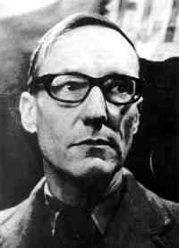 As a young man, William S. Burroughs already had a reputation as a brilliant, rather strange, and slightly sinister character. Although he'd been born into a well to do family of some distinction (his grandfather had founded the Burroughs Adding Machine company), and had been exceedingly well educated (including Harvard University), the young Bill Burroughs had tossed it all aside and moved to New York where he involved himself with the criminal underworld -- apparently just for the kicks. While most families might have kicked up a fuss and cut off his generous allowance, Bill's family seemed to accept it and just let him get on with being Bill. At some point he did manage to go to Vienna to study medicine, though only for six months -- scampering home just ahead of the Nazis. In 1940, he spent a month in a mental hospital, after cutting off the end of his pinky finger to impress his male lover. Two years later, he was drafted to serve in World War II. But apparently the United States Army didn't want former mental patients -- let alone former gay mental patients -- fighting and dying for the Red, White, and Blue. Bill was given a civilian disability discharge and sent on his way. Dismissed by his country, Burroughs remained in New York, once again hanging out with criminals and taking assorted dead end jobs (exterminator, factory worker, copywriter, and bartender) for kicks and experience. In addition to petty criminals his circle of friends included junkies (like Herbert Huncke), homosexuals, and young intellectuals -- including Columbia University students/dropouts Allen Ginsberg, Jack Kerouac, John Clellon Holmes, Hal Chase, and Lucien Carr. Eventually Bill also made the acquaintance of benzedrine, morphine, and heroin. He was also introduced to brilliant and beautiful Joan Vollmer, for whom he made an exception to his usual homosexual preferences. Together they hosted Carr, Kerouac, Huncke, Ginsberg, and some of Bill's gay friends in frequent orgies of drugs, sex, and all night intellectual banter. (Thanks to Huncke, the group's core members were interviewed for the famed Kinsey sex reports.) 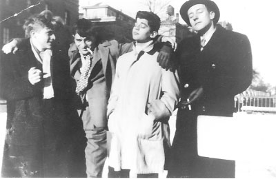 When they weren't rolling in the sheets together, the friends would entertain each other with complicated skits. Bill, for example would act out the role of a prissy English Governess. He would call out in a high falsetto, "My dear, your just in time for tea!" Or, rapping the offender on the knuckles shriek, "Don't say those dirty words in front of everybody!" He would also don a skirt and wig and play a "sinister old lesbian" contessa/art dealer with Jack Kerouac as his bumpkin shill. Another of Bill's favorite roles was Old Luke, the Southern sharecropper, rocking on the front porch with his shotgun over his knees (in real life Burroughs was obsessed with guns). It was a seemingly happy time for Bill Burroughs and company. But the fun hit a speed bump when Bill was arrested for forging prescriptions in order to get drugs. Soon after, Joan was carted off to Bellevue as the stress of Bill's arrest and her prolonged, excessive Benzedrine use drove her over the edge into psychosis. But, as soon as Joan got out of the loony bin and Bill's legal problems were cleared up, the two picked right up with their heavy drug habits again and left New York in search of better places to score. They moved to East Texas and went in as partners in an orange farm with a friend of Bill's. Here heavily addicted Joan gave birth to Bill Burroughs Jr. (she already had a 4 year old daughter, Julie, in tow from an earlier marriage). Bill settled down to a life as a gentleman pot farmer, complete with coat and tie. Having a large piece of property meant he was free to shoot off his guns. The frequent target practice worried neighbors. Had mobsters moved in? (Bill had learned to shoot as a youngster while game hunting with family.) Before long, Herbert Huncke joined them again, cooking the steaks and fetching firewood. Together the group emptied the neighboring small towns of booze and Benzedrine inhalers. Thus far there had been a great deal of colorful living but very little indication that Bill Burroughs would ever amount to anything. Meanwhile friends Allen Ginsberg and Jack Kerouac were zinging about the countryside, sometimes with Neal Cassady, searching for a New Vision, and a new way to write the great American poem or novel. Still, back in '44, there had once been a brief foreshadowing of the influence Bill would some day have on scores of writers, musicians, film makers, and painters. It occurred when Ginsberg and Carr asked Burroughs to settle an argument -- an intellectual argument -- they'd been having for weeks: Did art need an audience in order to be art? Or would it still be art just the same, if it was done only for one's own satisfaction, with no one else ever viewing it. Eagerly they awaited his opinion, wondering which side he would take. "That's the stupidest question I ever heard of," Burroughs informed them. "It depends on how you want to define the word 'art'. Words don't have a built in definition." The two were stunned. This was a perspective they hadn't considered. But Burroughs, 10 years older and already a Harvard graduate, possessed a background in literature and anthropology. He'd also studied in Chicago with Count Korzybski, the founder of the theory of general semantics. Burroughs' understanding of words, their associated meanings, and their power to influence and control the human psyche would one day become an important obsession. But first would come two critical events that would change his life forever. 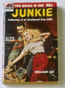First, circa 1948 the Burroughs family had left Texas for New Orleans and from there moved on to Mexico. And it was here in Mexico City in 1950, that Burroughs, at the urging of old Harvard chum Elvin Kells, began writing a book about his drug experiences. He set himself a regular daily schedule (Bill was very into routines), and took daily injections of morphine to help him along in the project. The finished the manuscript, his first major (solo) writing project, was titled Junkie. Pleased with his efforts Burroughs would also write another book based on personal experience called Queer. But although Junkie would find a publisher among the pulp paperbacks by 1953, Queer would not find a publishing company bold enough to stamp their name on it until 1986. 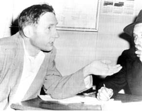Then, on September 7, 1951 it was time for the next big event. Bill was to recall that he'd felt an inexplicable depression that day, and that as he was walking down the street, tears had begun streaming down his face. He was mystified, sensing only that something awful was going to happen. Later, while he and Joan were visiting friends, he guzzled down 8 or 10 drinks, just to fight back the unrelenting blues overwhelming him. Suddenly he told Joan, "It's time for our William Tell act. Joan placed a glass of water on her head. Bill took out his gun, took aim, and missed the glass, shooting Joan in the head. An hour or so later she was dead. 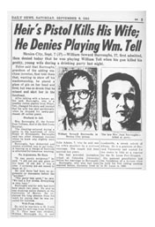A devastated Bill was charged with criminal imprudence and imprisoned to await trial. But wait there's more! The lawyer that got Bill out on bail ended up killing someone himself and fled the country. As Bill's hopes of a successful trial began to dwindle, he jumped bail and left Mexico. He eventually traveled through South America bent on finding the legendary hallucinogenic concoction known as yage or ayahuasca. More powerful than LSD, it was used by native shamans for spiritual journeys and healing rituals. Exploring ever deeper into the frontiers of the mind, Burroughs would later write, "There is nothing to fear. Your ayahuasca consciousness is more valid than Normal consciousness." Next, Burroughs travelled to North Africa, where he settled in Tangier, still reeling from Joan's death. Drugs were easy to find in Tangier, and so were attractive young men. Bill's landlady assured him, "You understand, you can be free here." He could drink, drug, suck cock, play with his Orgone Box, and shoot his guns without harassment. It was here that he again began to write, tearing through sheet after sheet, and -- finished -- flinging them wildly aside only to begin again. It was like this, in 1957 that Jack Kerouac and Allen Ginsberg found William Buroughs -- writing madly, eating marijuana candy and boozing, and keeping to his fastidious daily routine. They were impressed by the obvious genius within his stray pages and confused piles and helped him assemble them into a manuscript. Published in 1959, it was called The Naked Lunch. It seethed with bizarre scenes, disturbing images (some of which gave Kerouac nightmares) as well as hilarious ironies. 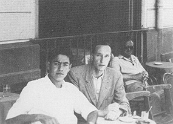 Burroughs described his purpose in writing it as "shitting out my educated Middlewest background once and for all. It's a matter of catharsis, where I say the most horrible things I can think of. Realize that--the most horrible dirty smily awful niggardliest posture possible. . .?" This stream-of-consciousness spewing was apparently an attempt to free himself from the social and familial conditioning that controlled him, that hemmed him in, that ultimately drove him -- in desperation or rebellion -- to self-limiting and self-destructive choices (like playing William Tell with Joan). Although Burroughs would continue to call upon this spew approach to writing throughout most of his life, he was soon to add a new method into his tool kit. It came in September of 1959, when Burroughs was living in Paris. One day close friend Brion Gysin accidentally sliced through a stack of newspapers and some back issues of Time and Life magazines. (He had been using them to buffer some cutting he was doing with a utility blade.) Gysin noticed that where the cut up strips had rearranged and overlapped, they created new texts. He realized that gluing the resultant texts onto a blank page generated a new kind of text, with strange new ideas, words images, and connections. 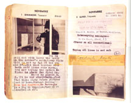Burroughs became obsessed with his friend's new "cut ups" technique. He cut up his own texts and those of poet friends, revelling in the startling new meanings and insights that resulted from these chaos infused texts. The approach even prompted the reader to see words themselves -- their actual meanings -- in a fresh, creative light. He soon began to believe that "the only way to find out what people were really saying was to cut up their words and get at the meanings hidden inside" (Barry Miles). Burroughs became convinced that everyone was so conditioned by language that even that which they believed to be straight perception (via sight, sound, touch) was in fact an illusion -- a filtered version of reality, with the filters embedded in our language. Because of this awareness, he became obsessed with issues of social control, thought control-- at a level much more subtle, and thus more pernicious, than the outward laws and regulations challenged by Ginsberg and others (as they battled "anti-obscenity" laws and other free speech issues). The kind of social control Burroughs saw wasn't even encoded in the law. It was programmed into your own brain -- through assumptions and associations -- just as it had been for Carr and Ginsberg in '44 when they were unable to see that they could choose to define (and pursue) art in any way they saw fit. From here Burroughs moved on to applying the "cut up" technique to the spoken word, utilizing tape recorders, and then on to visual representations -- taking endless photographs of the same subject, cutting them up and collaging them together. (He also played with the idea that human speech was the result of a virus, contracted by our ancestors -- "the word virus".)
But as he penetrated more deeply into the church he discovered that the visionary Hubbard was also an eccentric fascist and that his "church" used appallingly effective mind control techniques to assure a steady supply of loyalty, secrecy, and cash. Burroughs found it sickening and ironic that a tool effective for setting people free was being used to enslave them in other ways. He broke with Scientology and went on to blab all that he knew. (Note that a man with fewer guns might not have been so brave! Scientology had a strong policy of punishing those who broke the silence or pissed them off.)
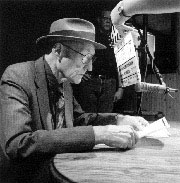Although Burroughs continued to look for other ways to explore the mind and set it free from conditioned controls (with drugs, with writing, and with the Dream Machine developed by Brion Gysin), he was also beginning to explore his role as underground celebrity. Meeting new people led to new ways to branch out and express himself. He began giving readings of his work. He also continued to play, obsessively, with tape recordings -- of himself and of others. He even got in on some experimental film projects -- both documentary and short features. One such project was Chappaqua in 1966. Directed by Conrad Rooks, it features Burroughs (as "Opium Jones"), along with poet Allen Ginsberg, and musician Ravi Shankar. Much later there was considerable collaboration with film director Gus van Sant, Jr: Discipline of D.E. , Thanksgiving Prayer, Drugstore Cowboy,and Even Cowgirls Get the Blues. Burroughs even had a cameo role in the cult film Twister (not to be confused with the movie about tornado chasers). 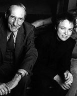
Musicians were discovering Burroughs too. Even as Beat/Hippie poet Allen Ginsberg was becoming less well known among young people (though still held in high regard by some, such as The Clash, into the '80s) and Jack Kerouac was being relegated to college literature classes, Burroughs was becoming a major new influence on the artistic edge. His words, his face, and his voice were finding their way into albums and music videos. He collaborated with a diversity of edgey groups including Ministry, Skinny Puppy, Laurie Anderson, and the Disposable Heroes. None of this seemed to slow down his writing. After Junkie and Naked Lunch he went on to publish:
The Ticket That Exploded Nova Express The Wild Boys: A Book of the Dead Exterminator Port of Saints Cities of the Red Night The Place of Dead Roads Queer The Western Lands My Education: A Book of Dreams Then,after the death of long time painter friend, Brion Gysin, Burroughs began to venture further into visual art. No longer limiting himself to photo montage, he began to paint as well (something he refused to do while Gysin was alive). 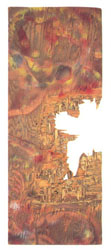One day, after blasting at some plywood with his shotgun, he noticed how intricate and beautiful the resultant designs were -- it was like looking into clouds or abstract art. All sorts of mentally teasing images suggested themselves. Thus began his shotgun art phase. He blasted cans of paint onto plywood and then detailed the splatters. Burroughs continued to develop and expand upon a host of other interests as well, including:
Obviously, William Burroughs was not a man to be easily pigeon-holed. As a result, he presents the inspiring image of a man who managed to live life on his own terms -- a revolutionary artist, whose life demonstrates how the expression of a unique inner vision requires integrity, audacity, tenacity, and a complete disregard for the conditioned expectations of self and society. Such was Burroughs' emphasis on overcoming "control" that for some he has become a symbol of anti-authoritarianism, inspiring them to jeer at the establishment and the powers that be, and to find ways to get around them. For some of these he even appears to represent a kind of alternative power and machismo -- the pale, effete misfit powered by technological gizmos (guns, dream machines, tape recorders...computers) and by artistic but violent words and images. 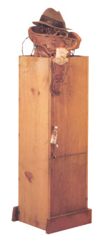 Significantly, Burroughs himself sought freedom, and shunned conflict. His travels always took him in search of places where the police, neighbors, landlords turned a blind eye, left him alone, minded their own business. When his life or his work attracted negative official attention he was invariably polite and cooperative. The prototypical slacker(Burroughs was 40 or 50 old years old before it to become obvious he was doing anything more significant that screwing off), William Burroughs just wanted to be left alone to do his own thing without a lot of hassles.
The final irony is that the man so vividly remembered by the public for a truly disturbing body of work, is invariably recalled by those who knew him as kind, gracious, and impeccably well-mannered. But though the contrast may seem stark, it is worth remembering that Burroughs identified the real struggle in life, the real conflict for control, as being within the self. (Hence his obsession with daily routines and attention to detail.) Rather than supress the darkness in his soul, he vented it, through writing. Rather than repress and deny his unconventional desires, he indulged them within measure (in later life). In short, he did not seek, as people often do, to be someone else. But he sought instead to free himself from beliefs which limit, control, and imprison the invidual in mediocrity and dull repetition.

Cut music lines Smash the control images Smash the control machine. ---William S. Burroughs
Related TriviaWas Bill Burroughs' 1951 shooting of Joan Vollmer Burroughs really an accident? The accepted answer is "yes". Intriguingly however, Lawrence, Kansas resident George Laughead Jr. records a visit with Burroughs where the famous author makes the following remark/advice: "Shoot the bitch and write a book! That's what I did." Other witnesses to the remark, including Bill's "boy" James Grauerholz, later claimed they never heard a thing.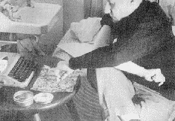
They've got this one track mind.'' -- Bill Burroughs
Timeline
|
 Along the way Burroughs experimented with yet another technique for going deeper into one's mental filters: Scientology.
Along the way Burroughs experimented with yet another technique for going deeper into one's mental filters: Scientology. {kind=link}
{kind=link}